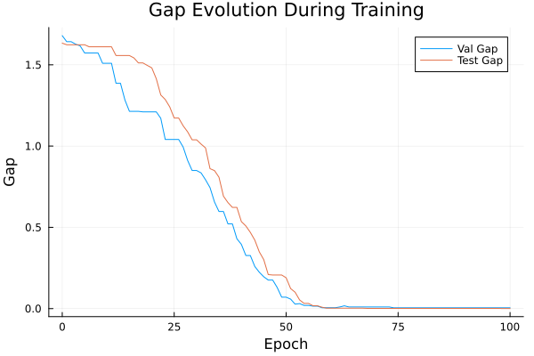
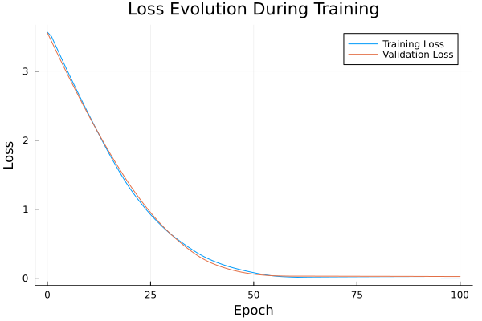

Basic Tutorial: Training with FYL on Argmax Benchmark
This tutorial demonstrates the basic workflow for training a policy using the Perturbed Fenchel-Young Loss algorithm.
Setup
using DecisionFocusedLearningAlgorithms
using DecisionFocusedLearningBenchmarks
using MLUtils: splitobs
using PlotsCreate Benchmark and Data
b = ArgmaxBenchmark()
dataset = generate_dataset(b, 100)
train_data, val_data, test_data = splitobs(dataset; at=(0.3, 0.3, 0.4))(DecisionFocusedLearningBenchmarks.Utils.DataSample{@NamedTuple{}, @NamedTuple{}, Matrix{Float32}, Vector{Float32}, Vector{Float32}}[DataSample(x=Float32[-0.485583 1.00195 … 2.74041 -1.5978; 1.07451 -0.976703 … -0.719273 1.1425; … ; 0.000944595 1.25754 … -0.890872 0.16008; 0.145514 -0.113068 … 2.42043 0.53225], θ=Float32[-0.119092, 1.54308, 0.808785, -0.869502, -0.141316, 0.0236059, -2.21116, 0.311402, 0.956096, -0.431809], y=Float32[0.0, 1.0, 0.0, 0.0, 0.0, 0.0, 0.0, 0.0, 0.0, 0.0]), DataSample(x=Float32[0.251505 -0.560369 … -2.03328 -0.366438; 0.165331 -0.0794648 … -0.406585 -0.169178; … ; -2.05857 1.17494 … -1.00702 0.55169; 0.720477 -0.971468 … 0.0642197 -0.917055], θ=Float32[-1.1088, 0.360805, 1.57362, -1.50383, -2.28152, -1.14987, -1.27193, 0.216598, -2.5336, -0.557748], y=Float32[0.0, 0.0, 1.0, 0.0, 0.0, 0.0, 0.0, 0.0, 0.0, 0.0]), DataSample(x=Float32[1.10357 -0.347085 … 0.390847 1.60872; 0.26148 -0.448926 … -0.645241 1.78873; … ; 0.464925 -1.08886 … -0.447144 1.05392; 0.0866942 0.383273 … -0.770566 -0.43682], θ=Float32[1.07843, -0.475163, 0.92551, -0.75468, -0.247261, -0.176454, -1.37898, -0.703038, -0.357589, 3.16667], y=Float32[0.0, 0.0, 0.0, 0.0, 0.0, 0.0, 0.0, 0.0, 0.0, 1.0]), DataSample(x=Float32[-0.297406 -1.87273 … -1.43775 -1.38044; 0.171407 -0.100244 … -0.596465 -1.3048; … ; -1.43535 0.26294 … -0.922809 0.227222; 0.391029 0.386954 … -0.555613 -0.490912], θ=Float32[-1.98004, -0.508489, 0.0723754, -3.28571, -1.48298, -1.6334, 1.17868, 1.51418, -1.33955, -1.89448], y=Float32[0.0, 0.0, 0.0, 0.0, 0.0, 0.0, 0.0, 1.0, 0.0, 0.0]), DataSample(x=Float32[-0.789878 -0.86687 … 0.777903 -0.949088; -0.821596 -0.369421 … -0.33026 0.819555; … ; -1.79149 0.169032 … -0.917306 -1.12422; 0.0105362 0.532597 … 0.0528139 -1.96153], θ=Float32[-2.31242, -0.455362, -0.697644, -1.10707, -0.101328, -1.26669, 0.872292, 1.44703, 0.128834, -0.980675], y=Float32[0.0, 0.0, 0.0, 0.0, 0.0, 0.0, 0.0, 1.0, 0.0, 0.0]), DataSample(x=Float32[-1.10442 0.953301 … -0.454452 -0.375887; -0.239058 0.327322 … -0.860364 -0.396755; … ; -0.820763 -0.496848 … 0.926024 -0.173047; -1.21717 1.25038 … 0.382162 0.479943], θ=Float32[-1.47674, 0.230375, -0.453614, -1.19046, 0.237352, -0.129723, 0.0681824, 0.16379, 0.0700248, -1.18117], y=Float32[0.0, 0.0, 0.0, 0.0, 1.0, 0.0, 0.0, 0.0, 0.0, 0.0]), DataSample(x=Float32[0.74558 -0.441763 … 0.359726 3.27569; -1.27322 0.385373 … -0.708533 0.0269008; … ; -0.504709 1.67935 … 0.423729 1.53937; -0.100521 0.685931 … 1.29584 0.616744], θ=Float32[-0.398322, 0.951954, 0.558646, 0.695625, 0.690647, -1.27969, -3.39728, 0.728792, 0.636993, 3.22134], y=Float32[0.0, 0.0, 0.0, 0.0, 0.0, 0.0, 0.0, 0.0, 0.0, 1.0]), DataSample(x=Float32[1.57597 1.41881 … 1.27405 -0.363962; -0.639487 2.14513 … -1.14374 1.36246; … ; 0.120892 -1.38601 … -1.44269 0.281512; -0.976933 -0.211872 … -1.40133 -1.03857], θ=Float32[0.806309, 0.528508, 0.020781, 0.192507, -0.258167, -0.753836, -1.31516, -0.472737, 0.587592, 0.410183], y=Float32[1.0, 0.0, 0.0, 0.0, 0.0, 0.0, 0.0, 0.0, 0.0, 0.0]), DataSample(x=Float32[-0.539308 0.668279 … -0.484502 -0.0117356; 0.240219 -0.668571 … -0.401374 -0.544242; … ; -0.00522999 0.238432 … -0.355223 0.52833; -0.488904 -0.157609 … 0.515425 -0.259347], θ=Float32[-0.291856, 0.0738223, 1.19802, -0.154467, -1.97183, 1.87539, -0.763138, -0.0923125, -1.18047, 0.380317], y=Float32[0.0, 0.0, 0.0, 0.0, 0.0, 1.0, 0.0, 0.0, 0.0, 0.0]), DataSample(x=Float32[2.66263 -0.343676 … 0.780231 -1.45793; -0.304121 1.30274 … 1.0158 1.2426; … ; -0.684407 0.13071 … -0.269932 -0.014766; 0.844124 0.250323 … 1.47301 1.04822], θ=Float32[1.83381, 0.575237, 0.283402, -1.88059, 1.1215, 1.17785, -1.64861, 0.0208966, 0.746749, -0.954849], y=Float32[1.0, 0.0, 0.0, 0.0, 0.0, 0.0, 0.0, 0.0, 0.0, 0.0]) … DataSample(x=Float32[-0.263028 -1.53868 … 2.04711 -1.58497; -0.398541 -0.643846 … 1.40293 -1.57044; … ; -0.130439 -0.304683 … 0.378475 0.00203695; 0.566243 0.579458 … -1.10029 0.729079], θ=Float32[-0.268424, -1.63256, 2.55071, -0.109679, 0.233823, 0.184514, -0.580545, -1.02473, 2.59939, -1.75039], y=Float32[0.0, 0.0, 0.0, 0.0, 0.0, 0.0, 0.0, 0.0, 1.0, 0.0]), DataSample(x=Float32[1.16588 0.332394 … -0.135824 0.443664; 0.601579 0.0918836 … -1.37656 -1.33111; … ; 1.59716 0.412845 … -0.294448 0.970681; 2.192 -0.885869 … -0.822036 -0.767075], θ=Float32[1.42237, 0.334739, 3.69798, -0.423117, 0.916863, 0.0380676, 1.44267, -0.50076, -0.549411, 0.510904], y=Float32[0.0, 0.0, 1.0, 0.0, 0.0, 0.0, 0.0, 0.0, 0.0, 0.0]), DataSample(x=Float32[-0.999362 1.9764 … -1.92497 -1.94936; -1.95615 0.0260772 … -0.634203 0.17382; … ; 0.128016 0.268058 … 1.82396 1.10606; 1.96808 0.968126 … 0.318651 0.297983], θ=Float32[-2.1416, 0.981172, -0.451869, -0.909431, -1.10312, -1.10699, -0.5412, 1.05222, 0.0258592, -0.574408], y=Float32[0.0, 0.0, 0.0, 0.0, 0.0, 0.0, 0.0, 1.0, 0.0, 0.0]), DataSample(x=Float32[1.08382 0.438033 … 1.09174 -0.0756617; 0.634139 -1.0405 … -1.24324 0.344858; … ; 0.975575 -1.26368 … -0.436676 -1.53431; 0.410592 1.42348 … 0.479901 -0.23672], θ=Float32[2.0005, -0.706927, 0.423344, 1.40402, -0.854942, -1.54623, -0.969648, 1.91021, -0.00941045, -0.68372], y=Float32[1.0, 0.0, 0.0, 0.0, 0.0, 0.0, 0.0, 0.0, 0.0, 0.0]), DataSample(x=Float32[0.544637 0.77879 … 0.545209 0.0798913; 0.312554 -1.63127 … 0.0368915 -0.365283; … ; 0.227027 0.0427401 … -1.47235 -0.0698078; -1.31197 0.77384 … -0.989437 0.300003], θ=Float32[0.931804, -0.223099, 0.699034, -0.647578, -1.025, -0.00629745, 0.493457, 1.14605, -0.478934, -0.54386], y=Float32[0.0, 0.0, 0.0, 0.0, 0.0, 0.0, 0.0, 1.0, 0.0, 0.0]), DataSample(x=Float32[-1.43094 0.558086 … -1.26406 2.60373; 1.35479 0.977016 … 0.242435 -0.223922; … ; -0.869107 -0.104399 … 0.235593 -0.408887; -0.413254 0.601767 … -0.0210353 0.454653], θ=Float32[-0.901183, 1.0231, 0.106378, 0.125234, 1.63124, -0.156896, -3.40787, -1.12705, -0.607424, 2.4302], y=Float32[0.0, 0.0, 0.0, 0.0, 0.0, 0.0, 0.0, 0.0, 0.0, 1.0]), DataSample(x=Float32[-0.760396 0.249764 … 0.254379 0.404768; -0.73108 0.157693 … -0.563449 -0.368054; … ; -0.306872 0.192402 … 1.05622 2.45151; 1.34158 -1.52921 … -0.0319546 -1.57796], θ=Float32[-0.753872, -0.0359127, -0.574624, -0.784656, -0.807162, -0.374989, 2.94907, -0.073404, 0.394376, 1.67178], y=Float32[0.0, 0.0, 0.0, 0.0, 0.0, 0.0, 1.0, 0.0, 0.0, 0.0]), DataSample(x=Float32[-1.46722 0.948324 … -0.812836 0.109961; 0.701228 1.21505 … 1.71261 -1.47128; … ; 0.474478 0.325096 … 0.689103 -0.374031; -0.542584 -0.759318 … -0.310575 -0.00709961], θ=Float32[-0.733532, 1.79999, 0.267125, -0.405887, 1.12724, 0.457883, -2.02078, 1.42915, 0.681938, -1.08738], y=Float32[0.0, 1.0, 0.0, 0.0, 0.0, 0.0, 0.0, 0.0, 0.0, 0.0]), DataSample(x=Float32[1.00883 -0.536081 … -0.328495 0.859676; 2.49441 -0.425997 … -1.00287 0.561905; … ; -1.2805 -1.15245 … 1.91751 1.56975; -1.35179 -0.0431231 … 0.460626 -0.784137], θ=Float32[1.38077, -0.919307, -1.21507, -0.0449569, 0.800154, -0.665931, 0.315224, -0.678735, 1.12837, 2.02424], y=Float32[0.0, 0.0, 0.0, 0.0, 0.0, 0.0, 0.0, 0.0, 0.0, 1.0]), DataSample(x=Float32[0.0980254 0.0716357 … 0.326796 -0.635633; 0.325715 -0.327419 … -0.602578 0.45409; … ; -1.07472 -0.516688 … -0.549743 -0.0772257; -0.0475379 1.91989 … 0.484033 -0.626951], θ=Float32[-0.413301, -0.548813, 0.236885, -2.18325, -0.0758056, -2.30625, -0.256114, 1.32623, -0.712474, 0.230844], y=Float32[0.0, 0.0, 0.0, 0.0, 0.0, 0.0, 0.0, 1.0, 0.0, 0.0])], DecisionFocusedLearningBenchmarks.Utils.DataSample{@NamedTuple{}, @NamedTuple{}, Matrix{Float32}, Vector{Float32}, Vector{Float32}}[DataSample(x=Float32[0.0310995 0.256878 … -1.8432 -0.176627; 0.346095 1.31293 … 0.645303 -1.00029; … ; 1.08001 0.538559 … -1.19768 0.316148; -1.40332 1.25118 … 0.645288 0.183725], θ=Float32[1.14138, 1.55318, 0.107563, -0.781929, -1.06084, 1.52815, -0.570002, 0.324171, -2.59018, -0.288002], y=Float32[0.0, 1.0, 0.0, 0.0, 0.0, 0.0, 0.0, 0.0, 0.0, 0.0]), DataSample(x=Float32[1.04707 0.573143 … -1.38743 0.268515; 0.66375 -0.363676 … -0.779036 -1.09646; … ; -0.00716555 -1.04456 … -0.0294696 1.35146; 0.874834 -0.602685 … -0.738278 -0.0415353], θ=Float32[0.86129, 0.00402525, -0.0133979, -0.878523, -1.17015, -0.881298, 1.87996, 0.318199, -0.64312, 0.72122], y=Float32[0.0, 0.0, 0.0, 0.0, 0.0, 0.0, 1.0, 0.0, 0.0, 0.0]), DataSample(x=Float32[-1.21929 1.08627 … 0.427311 0.76778; 0.536284 0.119196 … -1.18549 0.15989; … ; 1.57817 -0.291241 … -0.0345994 -1.42827; 0.701991 -1.8361 … 1.93826 -1.43998], θ=Float32[0.752441, 0.541611, -0.153768, 2.69525, 0.0237928, -1.26186, 2.295, -0.358545, -0.238247, -0.596191], y=Float32[0.0, 0.0, 0.0, 1.0, 0.0, 0.0, 0.0, 0.0, 0.0, 0.0]), DataSample(x=Float32[0.231856 0.152804 … 0.529708 -0.0777745; -1.39123 -0.300253 … -0.263474 0.319503; … ; 2.05178 -0.355669 … 1.83994 0.826844; -1.75293 -0.552691 … -0.46849 -1.09686], θ=Float32[1.54951, -0.648321, -1.21801, 0.401999, 1.04721, -0.142338, -0.692011, 2.10206, 1.73935, 0.606245], y=Float32[0.0, 0.0, 0.0, 0.0, 0.0, 0.0, 0.0, 1.0, 0.0, 0.0]), DataSample(x=Float32[0.73577 -0.484102 … 1.16244 -0.423797; -2.1196 -1.19449 … 0.721661 0.473325; … ; 0.0128738 0.00921851 … -0.220864 -0.842963; 0.640688 0.770932 … -0.571841 0.147579], θ=Float32[-0.66093, -0.589187, -0.749382, 2.783, -0.488403, 0.269234, 0.558889, -0.64343, 0.713541, -0.388981], y=Float32[0.0, 0.0, 0.0, 1.0, 0.0, 0.0, 0.0, 0.0, 0.0, 0.0]), DataSample(x=Float32[2.0841 0.903007 … 0.70679 -0.345029; 0.392121 2.5488 … 1.17492 -0.144951; … ; -0.534533 1.08779 … -2.62541 0.714689; 1.38713 0.599569 … 0.290639 -0.337557], θ=Float32[1.3717, 3.52763, -0.527568, -0.741103, -0.161384, -1.84152, 0.928737, 0.793937, -0.719661, 0.600247], y=Float32[0.0, 1.0, 0.0, 0.0, 0.0, 0.0, 0.0, 0.0, 0.0, 0.0]), DataSample(x=Float32[-1.22162 -0.471561 … -1.08969 0.705567; 0.832801 0.441995 … 0.914446 -0.178144; … ; 0.783855 -1.1615 … -0.0454736 1.76523; -0.574061 0.284567 … 0.755844 0.0380405], θ=Float32[-0.122185, -1.12676, -0.964115, -1.07842, 1.72365, 1.00117, 0.607296, 1.10052, -0.654572, 1.83467], y=Float32[0.0, 0.0, 0.0, 0.0, 0.0, 0.0, 0.0, 0.0, 0.0, 1.0]), DataSample(x=Float32[-1.21258 -0.154709 … -2.34757 -0.204956; -0.471101 -0.259754 … -0.600973 2.29101; … ; 0.171755 1.23759 … -1.694 0.224328; -0.415872 -0.0201517 … 1.05824 -0.631084], θ=Float32[-1.53138, 0.777425, 1.08285, 1.03606, 0.122308, 0.306953, 0.372521, -0.352721, -2.8565, 1.40645], y=Float32[0.0, 0.0, 0.0, 0.0, 0.0, 0.0, 0.0, 0.0, 0.0, 1.0]), DataSample(x=Float32[0.748174 0.194704 … -1.22016 1.52166; -1.18368 -2.64329 … 0.662773 0.643172; … ; -0.00458199 -0.162713 … -1.20373 0.0559666; -1.60839 0.101243 … -0.170701 0.380202], θ=Float32[0.512906, -1.03059, 0.0119148, -4.0485, -0.751399, -1.27558, 1.18795, -0.565609, -1.1438, 1.31256], y=Float32[0.0, 0.0, 0.0, 0.0, 0.0, 0.0, 0.0, 0.0, 0.0, 1.0]), DataSample(x=Float32[0.920267 0.186487 … 0.953014 -0.234771; 0.650174 0.433111 … -1.42521 -0.95443; … ; -0.734105 -1.21988 … 0.384634 -1.40898; 0.867633 2.19127 … -0.474545 -1.21957], θ=Float32[0.237358, -0.947827, -2.60155, -1.18176, 3.52235, -1.64948, 0.598144, -0.481807, 0.152831, -0.940063], y=Float32[0.0, 0.0, 0.0, 0.0, 1.0, 0.0, 0.0, 0.0, 0.0, 0.0]) … DataSample(x=Float32[-0.913953 -0.247276 … -0.159432 1.40803; -0.629897 -1.22113 … -1.45483 -0.347474; … ; 0.437095 1.56643 … 1.37919 0.572117; 0.502506 1.5358 … 0.456073 -0.187418], θ=Float32[-0.577401, 0.664566, -0.712895, -0.33125, 1.41615, -1.45298, -2.10792, -1.18686, 0.299092, 0.879173], y=Float32[0.0, 0.0, 0.0, 0.0, 1.0, 0.0, 0.0, 0.0, 0.0, 0.0]), DataSample(x=Float32[1.14642 0.500879 … 0.691314 -0.921423; 0.322163 0.254845 … 1.62893 -0.841385; … ; -0.453257 -1.58299 … 0.237629 1.35519; 1.60944 0.700803 … 0.529647 0.574696], θ=Float32[1.63963, -0.711941, 0.128911, 0.513597, -1.33051, -0.527311, -0.222778, 1.98795, 1.59694, 0.011275], y=Float32[0.0, 0.0, 0.0, 0.0, 0.0, 0.0, 0.0, 1.0, 0.0, 0.0]), DataSample(x=Float32[1.09525 -0.854237 … 0.66965 0.428973; -0.082738 -0.6943 … -0.444083 1.37571; … ; -0.371892 1.15258 … 0.253687 0.976973; -0.360489 0.220911 … 0.973752 -0.943909], θ=Float32[0.530615, 0.0969282, 1.05574, 0.0308088, -0.685111, -1.66277, -1.37276, -0.742677, 0.0674473, 1.63546], y=Float32[0.0, 0.0, 0.0, 0.0, 0.0, 0.0, 0.0, 0.0, 0.0, 1.0]), DataSample(x=Float32[0.102329 -0.670522 … -0.890852 -0.0851104; 0.894755 0.324096 … 1.7181 1.76013; … ; 1.48568 -0.0625498 … -0.0452261 1.52461; 0.50892 -1.09644 … 1.37522 1.26695], θ=Float32[1.58144, -0.450263, -0.82293, 0.0629228, -0.847356, -1.1396, -0.490998, 0.0132168, -0.424959, 1.63361], y=Float32[0.0, 0.0, 0.0, 0.0, 0.0, 0.0, 0.0, 0.0, 0.0, 1.0]), DataSample(x=Float32[-1.18277 -2.26036 … 0.396962 1.26147; 0.412502 0.299213 … 1.01769 1.39211; … ; -1.752 -0.133661 … 0.352487 0.630304; 0.486708 -1.57992 … -0.426962 0.918788], θ=Float32[-2.00686, -1.88134, -0.180173, -0.990398, -0.422616, -0.640686, 1.56743, 0.00676287, 1.37896, 1.95014], y=Float32[0.0, 0.0, 0.0, 0.0, 0.0, 0.0, 0.0, 0.0, 0.0, 1.0]), DataSample(x=Float32[1.31082 0.0430856 … 1.91789 -0.672496; 1.37695 0.171546 … 0.802168 0.234449; … ; -1.5453 1.73026 … -0.382611 0.556861; 0.175927 0.829556 … -1.7508 -0.52413], θ=Float32[0.691036, 1.92957, 0.450956, 0.909697, 0.633699, -1.16807, 0.322885, -0.334624, 1.36073, 0.117653], y=Float32[0.0, 1.0, 0.0, 0.0, 0.0, 0.0, 0.0, 0.0, 0.0, 0.0]), DataSample(x=Float32[0.0655892 0.585585 … -1.41563 1.47249; -0.0563843 0.687757 … -0.172915 -0.201558; … ; -2.40037 0.822601 … 0.63944 -0.53739; -0.262353 -0.856591 … 0.000335105 0.944088], θ=Float32[-2.2043, 0.691096, 0.831482, 1.80309, -1.44217, 2.27408, 0.352868, -0.663193, -0.794668, 0.791345], y=Float32[0.0, 0.0, 0.0, 0.0, 0.0, 1.0, 0.0, 0.0, 0.0, 0.0]), DataSample(x=Float32[2.65928 0.703107 … -1.43499 0.184715; 1.79653 -0.296787 … -0.96583 0.226362; … ; 0.3742 -0.204772 … -0.325085 2.48177; -0.151952 -1.33844 … -0.540176 -0.969169], θ=Float32[2.23264, 0.583763, -0.375831, 2.1454, -1.2072, -0.314106, -0.617751, 0.803696, -2.09105, 2.12751], y=Float32[1.0, 0.0, 0.0, 0.0, 0.0, 0.0, 0.0, 0.0, 0.0, 0.0]), DataSample(x=Float32[2.33272 -1.59043 … 0.292145 -0.520327; 0.184451 0.636001 … -0.406416 0.564759; … ; -0.231365 1.0518 … -0.722727 0.864736; -0.536371 -0.514628 … 0.840079 0.248794], θ=Float32[1.40957, -0.270506, 1.63506, -0.699498, -1.76186, -1.25032, -0.471511, -0.875358, -0.655509, 0.950031], y=Float32[0.0, 0.0, 1.0, 0.0, 0.0, 0.0, 0.0, 0.0, 0.0, 0.0]), DataSample(x=Float32[-0.945197 -0.0369798 … -0.802202 0.0684474; -1.33435 0.477103 … 0.755844 -1.1136; … ; 1.01545 1.66223 … 0.459659 0.164323; -0.441099 0.186916 … -0.437471 1.09075], θ=Float32[-0.548969, 1.1289, -0.851343, -0.202283, -0.122742, -1.23192, 2.78406, 0.690716, -0.0307873, -0.389553], y=Float32[0.0, 0.0, 0.0, 0.0, 0.0, 0.0, 1.0, 0.0, 0.0, 0.0])], DecisionFocusedLearningBenchmarks.Utils.DataSample{@NamedTuple{}, @NamedTuple{}, Matrix{Float32}, Vector{Float32}, Vector{Float32}}[DataSample(x=Float32[-0.501175 -0.195701 … -0.455378 -0.806726; 0.153458 -0.0507013 … 0.727422 -1.49419; … ; -1.96905 -1.70912 … -0.332053 0.0881994; 0.157572 0.975192 … -3.19829 -0.0387287], θ=Float32[-1.6124, -1.02859, -1.23365, -0.629438, 1.28514, 0.0502584, -0.473143, -0.713378, 0.129939, -0.415293], y=Float32[0.0, 0.0, 0.0, 0.0, 1.0, 0.0, 0.0, 0.0, 0.0, 0.0]), DataSample(x=Float32[-0.321741 0.406913 … 1.13712 1.57764; -0.667639 -1.00815 … -0.0449992 -0.263928; … ; 0.0578293 -0.87812 … 0.117988 1.25551; -0.809661 0.343367 … 0.265905 1.18818], θ=Float32[-1.09048, -0.273153, -1.08873, 0.332912, 1.03728, -0.700078, 1.31992, -1.19261, 0.98974, 1.68845], y=Float32[0.0, 0.0, 0.0, 0.0, 0.0, 0.0, 0.0, 0.0, 0.0, 1.0]), DataSample(x=Float32[-0.116177 -0.393458 … 1.0133 0.413976; -0.841209 0.308277 … 0.355583 1.38779; … ; -0.333174 0.797758 … 0.766857 0.104772; -0.751233 2.20277 … 0.0126444 0.742574], θ=Float32[-0.317114, -0.203848, 1.65408, 0.0205975, 2.21634, 1.67915, 0.15338, 0.168532, 1.3622, 0.820403], y=Float32[0.0, 0.0, 0.0, 0.0, 1.0, 0.0, 0.0, 0.0, 0.0, 0.0]), DataSample(x=Float32[0.241672 0.493924 … 1.57294 0.909233; 0.313324 -0.763333 … -0.347178 0.65098; … ; 1.81733 1.45018 … -0.80345 0.0263574; -0.282756 -1.04133 … 1.69532 0.750634], θ=Float32[1.42741, 0.391844, -0.69087, -1.23947, 0.194405, 0.588162, -0.229641, -1.66349, 0.115448, 1.11311], y=Float32[1.0, 0.0, 0.0, 0.0, 0.0, 0.0, 0.0, 0.0, 0.0, 0.0]), DataSample(x=Float32[-0.679667 -1.54812 … 1.95009 -0.882532; 0.509565 -0.285083 … -0.391539 -0.221074; … ; -0.298541 -0.481368 … 1.08854 -0.254499; -1.22812 0.533467 … 1.65206 -0.277654], θ=Float32[-1.12345, -1.53806, -0.0202363, 0.0223792, -0.75705, 0.863278, 0.203965, 1.57239, 2.20358, -1.14267], y=Float32[0.0, 0.0, 0.0, 0.0, 0.0, 0.0, 0.0, 0.0, 1.0, 0.0]), DataSample(x=Float32[-0.145851 -0.184242 … 0.102223 -0.0308201; -0.24565 -0.0537363 … -0.631414 -0.249032; … ; 0.570118 -0.287799 … -0.0633552 1.43165; 1.47265 -0.566601 … 1.77173 0.611901], θ=Float32[0.411533, -0.603489, -1.92679, 0.145758, 0.799792, -0.521923, -0.96181, 0.541044, -0.385224, 1.22528], y=Float32[0.0, 0.0, 0.0, 0.0, 0.0, 0.0, 0.0, 0.0, 0.0, 1.0]), DataSample(x=Float32[0.132048 -0.508041 … -0.254929 1.86848; 1.19499 -0.0617066 … 0.253513 1.72492; … ; -1.15437 1.36303 … -1.13413 0.553452; -0.494528 -1.30864 … 1.46324 0.283227], θ=Float32[-0.568561, 0.179005, 0.301872, 0.68707, 3.06237, -0.37184, -0.135311, 0.308508, -1.29813, 3.03489], y=Float32[0.0, 0.0, 0.0, 0.0, 1.0, 0.0, 0.0, 0.0, 0.0, 0.0]), DataSample(x=Float32[-0.89237 -0.502643 … 0.542744 -0.725057; -2.48492 -0.643733 … -0.263423 -0.712785; … ; -0.737232 -0.596179 … -2.1534 -0.593804; -0.510669 0.207482 … -0.0904936 0.0815218], θ=Float32[-1.8555, -0.907701, 0.431325, 0.293861, -0.258454, -1.30428, 1.1653, 0.0343492, -0.890658, -1.35011], y=Float32[0.0, 0.0, 0.0, 0.0, 0.0, 0.0, 1.0, 0.0, 0.0, 0.0]), DataSample(x=Float32[-0.592108 -0.19919 … -1.07835 -0.389333; 0.23454 -0.0503346 … 0.0729146 1.29356; … ; -0.34915 -0.191436 … -0.8508 0.73341; -0.0995492 -0.572998 … -1.48788 -0.350586], θ=Float32[-0.785125, 0.307601, -0.82483, 0.324321, 1.18603, 0.171142, -1.82872, -0.642506, -2.26288, 1.76323], y=Float32[0.0, 0.0, 0.0, 0.0, 0.0, 0.0, 0.0, 0.0, 0.0, 1.0]), DataSample(x=Float32[0.819846 1.97643 … -0.577031 1.23746; -1.59774 1.30447 … -1.59615 1.14197; … ; -1.25335 0.828644 … -1.39628 0.446101; -0.65783 -1.19213 … -0.585123 -0.151172], θ=Float32[-0.812136, 2.59183, -1.78826, -0.409653, -1.23374, -2.16656, 0.175094, 0.131876, -2.38217, 1.7676], y=Float32[0.0, 1.0, 0.0, 0.0, 0.0, 0.0, 0.0, 0.0, 0.0, 0.0]) … DataSample(x=Float32[-1.44631 -0.964792 … -0.0856914 0.366234; 0.375433 -0.0911293 … -0.750459 -2.16578; … ; -1.54677 -2.31387 … 1.14018 -0.897693; 1.69264 -0.423874 … 0.763199 0.13912], θ=Float32[-2.46504, -2.4785, -0.566328, 0.516306, 1.04187, -1.14853, 1.35223, 0.0069451, 0.840141, -1.98443], y=Float32[0.0, 0.0, 0.0, 0.0, 0.0, 0.0, 1.0, 0.0, 0.0, 0.0]), DataSample(x=Float32[-1.96333 -1.71663 … -0.769532 0.377965; 0.840852 0.546978 … -0.729829 1.3735; … ; 0.394171 1.39318 … -0.195967 -0.699514; 1.34593 -1.21276 … -0.575878 0.713737], θ=Float32[-1.35317, -0.0524811, 1.48479, -0.95548, -3.49517, -1.5441, 0.36405, 0.610205, -0.281195, -0.0254783], y=Float32[0.0, 0.0, 1.0, 0.0, 0.0, 0.0, 0.0, 0.0, 0.0, 0.0]), DataSample(x=Float32[0.013635 0.498181 … 0.230893 1.12785; 1.61133 -1.04971 … -0.196588 -0.494135; … ; 0.242612 -0.151571 … 0.096418 -0.953865; 0.271394 0.039996 … 0.414039 -1.11968], θ=Float32[0.121996, -0.364495, -1.2868, 0.11724, 1.64945, 1.15266, 1.2559, -0.576055, 0.578067, -0.290875], y=Float32[0.0, 0.0, 0.0, 0.0, 1.0, 0.0, 0.0, 0.0, 0.0, 0.0]), DataSample(x=Float32[1.13225 0.2987 … -0.295055 -0.959192; -1.53145 0.993894 … 1.55791 -1.13372; … ; 0.16876 -1.52624 … -0.438588 -1.22528; 0.777949 -1.98394 … 0.399889 -0.0212769], θ=Float32[0.128791, -0.725971, -1.69003, -1.35669, -0.613032, 0.532507, 0.0900871, -0.760138, 0.393712, -1.35808], y=Float32[0.0, 0.0, 0.0, 0.0, 0.0, 1.0, 0.0, 0.0, 0.0, 0.0]), DataSample(x=Float32[-0.992151 -1.08643 … 0.0542349 0.410118; -1.6728 -0.111045 … 0.0501725 0.18669; … ; -1.9452 -0.440434 … -1.17182 0.471651; -1.20602 -0.215221 … -0.658729 0.209051], θ=Float32[-2.82981, -0.917464, -2.16876, -0.811543, 1.09386, -0.833412, 0.203384, 0.795303, -0.520226, 1.26254], y=Float32[0.0, 0.0, 0.0, 0.0, 0.0, 0.0, 0.0, 0.0, 0.0, 1.0]), DataSample(x=Float32[0.782668 0.721853 … 0.554159 0.895467; -0.944223 -0.124393 … 0.185354 -0.118279; … ; -0.606432 -0.706427 … 0.284608 0.443019; 1.72471 0.506079 … 0.884008 0.8602], θ=Float32[-0.212611, 0.775479, -1.17746, 1.30751, 1.01539, 1.09822, -1.47101, 2.03642, 0.518289, 0.219144], y=Float32[0.0, 0.0, 0.0, 0.0, 0.0, 0.0, 0.0, 1.0, 0.0, 0.0]), DataSample(x=Float32[0.464729 0.676175 … 1.69376 0.687626; -0.231943 -0.873808 … -1.56442 2.56105; … ; -0.631264 -1.58771 … 1.32174 1.13105; 1.99987 1.15393 … -0.17592 1.37043], θ=Float32[-0.455972, -0.73887, -0.129105, -1.42445, 2.72418, 2.25856, -1.42613, -2.66852, 1.74012, 2.27846], y=Float32[0.0, 0.0, 0.0, 0.0, 1.0, 0.0, 0.0, 0.0, 0.0, 0.0]), DataSample(x=Float32[-0.781211 -1.93611 … 1.64583 -0.31665; 0.329689 0.998544 … 1.88718 0.10914; … ; 0.0304751 -0.611422 … -0.795373 0.225172; -0.345776 0.0431014 … 0.250849 0.0941939], θ=Float32[-0.282153, -1.46297, -0.27316, -0.271754, -0.235021, 0.667344, -0.692687, -0.360524, 2.77405, -0.575183], y=Float32[0.0, 0.0, 0.0, 0.0, 0.0, 0.0, 0.0, 0.0, 1.0, 0.0]), DataSample(x=Float32[0.145734 -0.0331227 … -0.60599 0.424914; -0.0419947 0.0565398 … 0.0871596 -1.12164; … ; 0.215638 1.4858 … -1.76423 0.303723; -0.536115 -0.0153384 … 0.292318 -1.07552], θ=Float32[-0.645551, 0.0783625, -0.0524347, -0.659553, 0.466952, 1.68581, -0.60928, -1.6524, -1.89691, -0.0074874], y=Float32[0.0, 0.0, 0.0, 0.0, 0.0, 1.0, 0.0, 0.0, 0.0, 0.0]), DataSample(x=Float32[-0.367513 0.720165 … 0.289519 0.0571037; -1.35363 0.662574 … -1.4338 -0.301853; … ; -1.05475 -0.938818 … -0.536949 0.234632; -0.571082 -0.218451 … 0.105102 0.181852], θ=Float32[-1.38898, -0.586351, -0.0736037, 3.69673, 1.3817, -1.20059, -2.04219, -0.257192, -0.511238, -0.05507], y=Float32[0.0, 0.0, 0.0, 1.0, 0.0, 0.0, 0.0, 0.0, 0.0, 0.0])], DecisionFocusedLearningBenchmarks.Utils.DataSample{@NamedTuple{}, @NamedTuple{}, Matrix{Float32}, Vector{Float32}, Vector{Float32}}[])Create Policy
model = generate_statistical_model(b; seed=0)
maximizer = generate_maximizer(b)
policy = DFLPolicy(model, maximizer)DFLPolicy{Flux.Chain{Tuple{Flux.Dense{typeof(identity), Matrix{Float32}, Bool}, typeof(vec)}}, typeof(DecisionFocusedLearningBenchmarks.Argmax.one_hot_argmax)}(Chain(Dense(5 => 1; bias=false), vec), DecisionFocusedLearningBenchmarks.Argmax.one_hot_argmax)Configure Algorithm
algorithm = PerturbedFenchelYoungLossImitation(;
nb_samples=10, ε=0.1, threaded=true, seed=0
)PerturbedFenchelYoungLossImitation{Optimisers.Adam{Float64, Tuple{Float64, Float64}, Float64}, Int64}(10, 0.1, true, Optimisers.Adam(eta=0.001, beta=(0.9, 0.999), epsilon=1.0e-8), 0, false)Define Metrics to track during training
validation_loss_metric = FYLLossMetric(val_data, :validation_loss)
val_gap_metric = FunctionMetric(:val_gap, val_data) do ctx, data
compute_gap(b, data, ctx.policy.statistical_model, ctx.policy.maximizer)
end
test_gap_metric = FunctionMetric(:test_gap, test_data) do ctx, data
compute_gap(b, data, ctx.policy.statistical_model, ctx.policy.maximizer)
end
metrics = (validation_loss_metric, val_gap_metric, test_gap_metric)(FYLLossMetric{SubArray{DecisionFocusedLearningBenchmarks.Utils.DataSample{@NamedTuple{}, @NamedTuple{}, Matrix{Float32}, Vector{Float32}, Vector{Float32}}, 1, Vector{DecisionFocusedLearningBenchmarks.Utils.DataSample{@NamedTuple{}, @NamedTuple{}, Matrix{Float32}, Vector{Float32}, Vector{Float32}}}, Tuple{UnitRange{Int64}}, true}}(DecisionFocusedLearningBenchmarks.Utils.DataSample{@NamedTuple{}, @NamedTuple{}, Matrix{Float32}, Vector{Float32}, Vector{Float32}}[DataSample(x=Float32[0.0310995 0.256878 … -1.8432 -0.176627; 0.346095 1.31293 … 0.645303 -1.00029; … ; 1.08001 0.538559 … -1.19768 0.316148; -1.40332 1.25118 … 0.645288 0.183725], θ=Float32[1.14138, 1.55318, 0.107563, -0.781929, -1.06084, 1.52815, -0.570002, 0.324171, -2.59018, -0.288002], y=Float32[0.0, 1.0, 0.0, 0.0, 0.0, 0.0, 0.0, 0.0, 0.0, 0.0]), DataSample(x=Float32[1.04707 0.573143 … -1.38743 0.268515; 0.66375 -0.363676 … -0.779036 -1.09646; … ; -0.00716555 -1.04456 … -0.0294696 1.35146; 0.874834 -0.602685 … -0.738278 -0.0415353], θ=Float32[0.86129, 0.00402525, -0.0133979, -0.878523, -1.17015, -0.881298, 1.87996, 0.318199, -0.64312, 0.72122], y=Float32[0.0, 0.0, 0.0, 0.0, 0.0, 0.0, 1.0, 0.0, 0.0, 0.0]), DataSample(x=Float32[-1.21929 1.08627 … 0.427311 0.76778; 0.536284 0.119196 … -1.18549 0.15989; … ; 1.57817 -0.291241 … -0.0345994 -1.42827; 0.701991 -1.8361 … 1.93826 -1.43998], θ=Float32[0.752441, 0.541611, -0.153768, 2.69525, 0.0237928, -1.26186, 2.295, -0.358545, -0.238247, -0.596191], y=Float32[0.0, 0.0, 0.0, 1.0, 0.0, 0.0, 0.0, 0.0, 0.0, 0.0]), DataSample(x=Float32[0.231856 0.152804 … 0.529708 -0.0777745; -1.39123 -0.300253 … -0.263474 0.319503; … ; 2.05178 -0.355669 … 1.83994 0.826844; -1.75293 -0.552691 … -0.46849 -1.09686], θ=Float32[1.54951, -0.648321, -1.21801, 0.401999, 1.04721, -0.142338, -0.692011, 2.10206, 1.73935, 0.606245], y=Float32[0.0, 0.0, 0.0, 0.0, 0.0, 0.0, 0.0, 1.0, 0.0, 0.0]), DataSample(x=Float32[0.73577 -0.484102 … 1.16244 -0.423797; -2.1196 -1.19449 … 0.721661 0.473325; … ; 0.0128738 0.00921851 … -0.220864 -0.842963; 0.640688 0.770932 … -0.571841 0.147579], θ=Float32[-0.66093, -0.589187, -0.749382, 2.783, -0.488403, 0.269234, 0.558889, -0.64343, 0.713541, -0.388981], y=Float32[0.0, 0.0, 0.0, 1.0, 0.0, 0.0, 0.0, 0.0, 0.0, 0.0]), DataSample(x=Float32[2.0841 0.903007 … 0.70679 -0.345029; 0.392121 2.5488 … 1.17492 -0.144951; … ; -0.534533 1.08779 … -2.62541 0.714689; 1.38713 0.599569 … 0.290639 -0.337557], θ=Float32[1.3717, 3.52763, -0.527568, -0.741103, -0.161384, -1.84152, 0.928737, 0.793937, -0.719661, 0.600247], y=Float32[0.0, 1.0, 0.0, 0.0, 0.0, 0.0, 0.0, 0.0, 0.0, 0.0]), DataSample(x=Float32[-1.22162 -0.471561 … -1.08969 0.705567; 0.832801 0.441995 … 0.914446 -0.178144; … ; 0.783855 -1.1615 … -0.0454736 1.76523; -0.574061 0.284567 … 0.755844 0.0380405], θ=Float32[-0.122185, -1.12676, -0.964115, -1.07842, 1.72365, 1.00117, 0.607296, 1.10052, -0.654572, 1.83467], y=Float32[0.0, 0.0, 0.0, 0.0, 0.0, 0.0, 0.0, 0.0, 0.0, 1.0]), DataSample(x=Float32[-1.21258 -0.154709 … -2.34757 -0.204956; -0.471101 -0.259754 … -0.600973 2.29101; … ; 0.171755 1.23759 … -1.694 0.224328; -0.415872 -0.0201517 … 1.05824 -0.631084], θ=Float32[-1.53138, 0.777425, 1.08285, 1.03606, 0.122308, 0.306953, 0.372521, -0.352721, -2.8565, 1.40645], y=Float32[0.0, 0.0, 0.0, 0.0, 0.0, 0.0, 0.0, 0.0, 0.0, 1.0]), DataSample(x=Float32[0.748174 0.194704 … -1.22016 1.52166; -1.18368 -2.64329 … 0.662773 0.643172; … ; -0.00458199 -0.162713 … -1.20373 0.0559666; -1.60839 0.101243 … -0.170701 0.380202], θ=Float32[0.512906, -1.03059, 0.0119148, -4.0485, -0.751399, -1.27558, 1.18795, -0.565609, -1.1438, 1.31256], y=Float32[0.0, 0.0, 0.0, 0.0, 0.0, 0.0, 0.0, 0.0, 0.0, 1.0]), DataSample(x=Float32[0.920267 0.186487 … 0.953014 -0.234771; 0.650174 0.433111 … -1.42521 -0.95443; … ; -0.734105 -1.21988 … 0.384634 -1.40898; 0.867633 2.19127 … -0.474545 -1.21957], θ=Float32[0.237358, -0.947827, -2.60155, -1.18176, 3.52235, -1.64948, 0.598144, -0.481807, 0.152831, -0.940063], y=Float32[0.0, 0.0, 0.0, 0.0, 1.0, 0.0, 0.0, 0.0, 0.0, 0.0]) … DataSample(x=Float32[-0.913953 -0.247276 … -0.159432 1.40803; -0.629897 -1.22113 … -1.45483 -0.347474; … ; 0.437095 1.56643 … 1.37919 0.572117; 0.502506 1.5358 … 0.456073 -0.187418], θ=Float32[-0.577401, 0.664566, -0.712895, -0.33125, 1.41615, -1.45298, -2.10792, -1.18686, 0.299092, 0.879173], y=Float32[0.0, 0.0, 0.0, 0.0, 1.0, 0.0, 0.0, 0.0, 0.0, 0.0]), DataSample(x=Float32[1.14642 0.500879 … 0.691314 -0.921423; 0.322163 0.254845 … 1.62893 -0.841385; … ; -0.453257 -1.58299 … 0.237629 1.35519; 1.60944 0.700803 … 0.529647 0.574696], θ=Float32[1.63963, -0.711941, 0.128911, 0.513597, -1.33051, -0.527311, -0.222778, 1.98795, 1.59694, 0.011275], y=Float32[0.0, 0.0, 0.0, 0.0, 0.0, 0.0, 0.0, 1.0, 0.0, 0.0]), DataSample(x=Float32[1.09525 -0.854237 … 0.66965 0.428973; -0.082738 -0.6943 … -0.444083 1.37571; … ; -0.371892 1.15258 … 0.253687 0.976973; -0.360489 0.220911 … 0.973752 -0.943909], θ=Float32[0.530615, 0.0969282, 1.05574, 0.0308088, -0.685111, -1.66277, -1.37276, -0.742677, 0.0674473, 1.63546], y=Float32[0.0, 0.0, 0.0, 0.0, 0.0, 0.0, 0.0, 0.0, 0.0, 1.0]), DataSample(x=Float32[0.102329 -0.670522 … -0.890852 -0.0851104; 0.894755 0.324096 … 1.7181 1.76013; … ; 1.48568 -0.0625498 … -0.0452261 1.52461; 0.50892 -1.09644 … 1.37522 1.26695], θ=Float32[1.58144, -0.450263, -0.82293, 0.0629228, -0.847356, -1.1396, -0.490998, 0.0132168, -0.424959, 1.63361], y=Float32[0.0, 0.0, 0.0, 0.0, 0.0, 0.0, 0.0, 0.0, 0.0, 1.0]), DataSample(x=Float32[-1.18277 -2.26036 … 0.396962 1.26147; 0.412502 0.299213 … 1.01769 1.39211; … ; -1.752 -0.133661 … 0.352487 0.630304; 0.486708 -1.57992 … -0.426962 0.918788], θ=Float32[-2.00686, -1.88134, -0.180173, -0.990398, -0.422616, -0.640686, 1.56743, 0.00676287, 1.37896, 1.95014], y=Float32[0.0, 0.0, 0.0, 0.0, 0.0, 0.0, 0.0, 0.0, 0.0, 1.0]), DataSample(x=Float32[1.31082 0.0430856 … 1.91789 -0.672496; 1.37695 0.171546 … 0.802168 0.234449; … ; -1.5453 1.73026 … -0.382611 0.556861; 0.175927 0.829556 … -1.7508 -0.52413], θ=Float32[0.691036, 1.92957, 0.450956, 0.909697, 0.633699, -1.16807, 0.322885, -0.334624, 1.36073, 0.117653], y=Float32[0.0, 1.0, 0.0, 0.0, 0.0, 0.0, 0.0, 0.0, 0.0, 0.0]), DataSample(x=Float32[0.0655892 0.585585 … -1.41563 1.47249; -0.0563843 0.687757 … -0.172915 -0.201558; … ; -2.40037 0.822601 … 0.63944 -0.53739; -0.262353 -0.856591 … 0.000335105 0.944088], θ=Float32[-2.2043, 0.691096, 0.831482, 1.80309, -1.44217, 2.27408, 0.352868, -0.663193, -0.794668, 0.791345], y=Float32[0.0, 0.0, 0.0, 0.0, 0.0, 1.0, 0.0, 0.0, 0.0, 0.0]), DataSample(x=Float32[2.65928 0.703107 … -1.43499 0.184715; 1.79653 -0.296787 … -0.96583 0.226362; … ; 0.3742 -0.204772 … -0.325085 2.48177; -0.151952 -1.33844 … -0.540176 -0.969169], θ=Float32[2.23264, 0.583763, -0.375831, 2.1454, -1.2072, -0.314106, -0.617751, 0.803696, -2.09105, 2.12751], y=Float32[1.0, 0.0, 0.0, 0.0, 0.0, 0.0, 0.0, 0.0, 0.0, 0.0]), DataSample(x=Float32[2.33272 -1.59043 … 0.292145 -0.520327; 0.184451 0.636001 … -0.406416 0.564759; … ; -0.231365 1.0518 … -0.722727 0.864736; -0.536371 -0.514628 … 0.840079 0.248794], θ=Float32[1.40957, -0.270506, 1.63506, -0.699498, -1.76186, -1.25032, -0.471511, -0.875358, -0.655509, 0.950031], y=Float32[0.0, 0.0, 1.0, 0.0, 0.0, 0.0, 0.0, 0.0, 0.0, 0.0]), DataSample(x=Float32[-0.945197 -0.0369798 … -0.802202 0.0684474; -1.33435 0.477103 … 0.755844 -1.1136; … ; 1.01545 1.66223 … 0.459659 0.164323; -0.441099 0.186916 … -0.437471 1.09075], θ=Float32[-0.548969, 1.1289, -0.851343, -0.202283, -0.122742, -1.23192, 2.78406, 0.690716, -0.0307873, -0.389553], y=Float32[0.0, 0.0, 0.0, 0.0, 0.0, 0.0, 1.0, 0.0, 0.0, 0.0])], LossAccumulator(:validation_loss, 0.0, 0)), FunctionMetric{Main.var"#2#3", SubArray{DecisionFocusedLearningBenchmarks.Utils.DataSample{@NamedTuple{}, @NamedTuple{}, Matrix{Float32}, Vector{Float32}, Vector{Float32}}, 1, Vector{DecisionFocusedLearningBenchmarks.Utils.DataSample{@NamedTuple{}, @NamedTuple{}, Matrix{Float32}, Vector{Float32}, Vector{Float32}}}, Tuple{UnitRange{Int64}}, true}}(Main.var"#2#3"(), :val_gap, DecisionFocusedLearningBenchmarks.Utils.DataSample{@NamedTuple{}, @NamedTuple{}, Matrix{Float32}, Vector{Float32}, Vector{Float32}}[DataSample(x=Float32[0.0310995 0.256878 … -1.8432 -0.176627; 0.346095 1.31293 … 0.645303 -1.00029; … ; 1.08001 0.538559 … -1.19768 0.316148; -1.40332 1.25118 … 0.645288 0.183725], θ=Float32[1.14138, 1.55318, 0.107563, -0.781929, -1.06084, 1.52815, -0.570002, 0.324171, -2.59018, -0.288002], y=Float32[0.0, 1.0, 0.0, 0.0, 0.0, 0.0, 0.0, 0.0, 0.0, 0.0]), DataSample(x=Float32[1.04707 0.573143 … -1.38743 0.268515; 0.66375 -0.363676 … -0.779036 -1.09646; … ; -0.00716555 -1.04456 … -0.0294696 1.35146; 0.874834 -0.602685 … -0.738278 -0.0415353], θ=Float32[0.86129, 0.00402525, -0.0133979, -0.878523, -1.17015, -0.881298, 1.87996, 0.318199, -0.64312, 0.72122], y=Float32[0.0, 0.0, 0.0, 0.0, 0.0, 0.0, 1.0, 0.0, 0.0, 0.0]), DataSample(x=Float32[-1.21929 1.08627 … 0.427311 0.76778; 0.536284 0.119196 … -1.18549 0.15989; … ; 1.57817 -0.291241 … -0.0345994 -1.42827; 0.701991 -1.8361 … 1.93826 -1.43998], θ=Float32[0.752441, 0.541611, -0.153768, 2.69525, 0.0237928, -1.26186, 2.295, -0.358545, -0.238247, -0.596191], y=Float32[0.0, 0.0, 0.0, 1.0, 0.0, 0.0, 0.0, 0.0, 0.0, 0.0]), DataSample(x=Float32[0.231856 0.152804 … 0.529708 -0.0777745; -1.39123 -0.300253 … -0.263474 0.319503; … ; 2.05178 -0.355669 … 1.83994 0.826844; -1.75293 -0.552691 … -0.46849 -1.09686], θ=Float32[1.54951, -0.648321, -1.21801, 0.401999, 1.04721, -0.142338, -0.692011, 2.10206, 1.73935, 0.606245], y=Float32[0.0, 0.0, 0.0, 0.0, 0.0, 0.0, 0.0, 1.0, 0.0, 0.0]), DataSample(x=Float32[0.73577 -0.484102 … 1.16244 -0.423797; -2.1196 -1.19449 … 0.721661 0.473325; … ; 0.0128738 0.00921851 … -0.220864 -0.842963; 0.640688 0.770932 … -0.571841 0.147579], θ=Float32[-0.66093, -0.589187, -0.749382, 2.783, -0.488403, 0.269234, 0.558889, -0.64343, 0.713541, -0.388981], y=Float32[0.0, 0.0, 0.0, 1.0, 0.0, 0.0, 0.0, 0.0, 0.0, 0.0]), DataSample(x=Float32[2.0841 0.903007 … 0.70679 -0.345029; 0.392121 2.5488 … 1.17492 -0.144951; … ; -0.534533 1.08779 … -2.62541 0.714689; 1.38713 0.599569 … 0.290639 -0.337557], θ=Float32[1.3717, 3.52763, -0.527568, -0.741103, -0.161384, -1.84152, 0.928737, 0.793937, -0.719661, 0.600247], y=Float32[0.0, 1.0, 0.0, 0.0, 0.0, 0.0, 0.0, 0.0, 0.0, 0.0]), DataSample(x=Float32[-1.22162 -0.471561 … -1.08969 0.705567; 0.832801 0.441995 … 0.914446 -0.178144; … ; 0.783855 -1.1615 … -0.0454736 1.76523; -0.574061 0.284567 … 0.755844 0.0380405], θ=Float32[-0.122185, -1.12676, -0.964115, -1.07842, 1.72365, 1.00117, 0.607296, 1.10052, -0.654572, 1.83467], y=Float32[0.0, 0.0, 0.0, 0.0, 0.0, 0.0, 0.0, 0.0, 0.0, 1.0]), DataSample(x=Float32[-1.21258 -0.154709 … -2.34757 -0.204956; -0.471101 -0.259754 … -0.600973 2.29101; … ; 0.171755 1.23759 … -1.694 0.224328; -0.415872 -0.0201517 … 1.05824 -0.631084], θ=Float32[-1.53138, 0.777425, 1.08285, 1.03606, 0.122308, 0.306953, 0.372521, -0.352721, -2.8565, 1.40645], y=Float32[0.0, 0.0, 0.0, 0.0, 0.0, 0.0, 0.0, 0.0, 0.0, 1.0]), DataSample(x=Float32[0.748174 0.194704 … -1.22016 1.52166; -1.18368 -2.64329 … 0.662773 0.643172; … ; -0.00458199 -0.162713 … -1.20373 0.0559666; -1.60839 0.101243 … -0.170701 0.380202], θ=Float32[0.512906, -1.03059, 0.0119148, -4.0485, -0.751399, -1.27558, 1.18795, -0.565609, -1.1438, 1.31256], y=Float32[0.0, 0.0, 0.0, 0.0, 0.0, 0.0, 0.0, 0.0, 0.0, 1.0]), DataSample(x=Float32[0.920267 0.186487 … 0.953014 -0.234771; 0.650174 0.433111 … -1.42521 -0.95443; … ; -0.734105 -1.21988 … 0.384634 -1.40898; 0.867633 2.19127 … -0.474545 -1.21957], θ=Float32[0.237358, -0.947827, -2.60155, -1.18176, 3.52235, -1.64948, 0.598144, -0.481807, 0.152831, -0.940063], y=Float32[0.0, 0.0, 0.0, 0.0, 1.0, 0.0, 0.0, 0.0, 0.0, 0.0]) … DataSample(x=Float32[-0.913953 -0.247276 … -0.159432 1.40803; -0.629897 -1.22113 … -1.45483 -0.347474; … ; 0.437095 1.56643 … 1.37919 0.572117; 0.502506 1.5358 … 0.456073 -0.187418], θ=Float32[-0.577401, 0.664566, -0.712895, -0.33125, 1.41615, -1.45298, -2.10792, -1.18686, 0.299092, 0.879173], y=Float32[0.0, 0.0, 0.0, 0.0, 1.0, 0.0, 0.0, 0.0, 0.0, 0.0]), DataSample(x=Float32[1.14642 0.500879 … 0.691314 -0.921423; 0.322163 0.254845 … 1.62893 -0.841385; … ; -0.453257 -1.58299 … 0.237629 1.35519; 1.60944 0.700803 … 0.529647 0.574696], θ=Float32[1.63963, -0.711941, 0.128911, 0.513597, -1.33051, -0.527311, -0.222778, 1.98795, 1.59694, 0.011275], y=Float32[0.0, 0.0, 0.0, 0.0, 0.0, 0.0, 0.0, 1.0, 0.0, 0.0]), DataSample(x=Float32[1.09525 -0.854237 … 0.66965 0.428973; -0.082738 -0.6943 … -0.444083 1.37571; … ; -0.371892 1.15258 … 0.253687 0.976973; -0.360489 0.220911 … 0.973752 -0.943909], θ=Float32[0.530615, 0.0969282, 1.05574, 0.0308088, -0.685111, -1.66277, -1.37276, -0.742677, 0.0674473, 1.63546], y=Float32[0.0, 0.0, 0.0, 0.0, 0.0, 0.0, 0.0, 0.0, 0.0, 1.0]), DataSample(x=Float32[0.102329 -0.670522 … -0.890852 -0.0851104; 0.894755 0.324096 … 1.7181 1.76013; … ; 1.48568 -0.0625498 … -0.0452261 1.52461; 0.50892 -1.09644 … 1.37522 1.26695], θ=Float32[1.58144, -0.450263, -0.82293, 0.0629228, -0.847356, -1.1396, -0.490998, 0.0132168, -0.424959, 1.63361], y=Float32[0.0, 0.0, 0.0, 0.0, 0.0, 0.0, 0.0, 0.0, 0.0, 1.0]), DataSample(x=Float32[-1.18277 -2.26036 … 0.396962 1.26147; 0.412502 0.299213 … 1.01769 1.39211; … ; -1.752 -0.133661 … 0.352487 0.630304; 0.486708 -1.57992 … -0.426962 0.918788], θ=Float32[-2.00686, -1.88134, -0.180173, -0.990398, -0.422616, -0.640686, 1.56743, 0.00676287, 1.37896, 1.95014], y=Float32[0.0, 0.0, 0.0, 0.0, 0.0, 0.0, 0.0, 0.0, 0.0, 1.0]), DataSample(x=Float32[1.31082 0.0430856 … 1.91789 -0.672496; 1.37695 0.171546 … 0.802168 0.234449; … ; -1.5453 1.73026 … -0.382611 0.556861; 0.175927 0.829556 … -1.7508 -0.52413], θ=Float32[0.691036, 1.92957, 0.450956, 0.909697, 0.633699, -1.16807, 0.322885, -0.334624, 1.36073, 0.117653], y=Float32[0.0, 1.0, 0.0, 0.0, 0.0, 0.0, 0.0, 0.0, 0.0, 0.0]), DataSample(x=Float32[0.0655892 0.585585 … -1.41563 1.47249; -0.0563843 0.687757 … -0.172915 -0.201558; … ; -2.40037 0.822601 … 0.63944 -0.53739; -0.262353 -0.856591 … 0.000335105 0.944088], θ=Float32[-2.2043, 0.691096, 0.831482, 1.80309, -1.44217, 2.27408, 0.352868, -0.663193, -0.794668, 0.791345], y=Float32[0.0, 0.0, 0.0, 0.0, 0.0, 1.0, 0.0, 0.0, 0.0, 0.0]), DataSample(x=Float32[2.65928 0.703107 … -1.43499 0.184715; 1.79653 -0.296787 … -0.96583 0.226362; … ; 0.3742 -0.204772 … -0.325085 2.48177; -0.151952 -1.33844 … -0.540176 -0.969169], θ=Float32[2.23264, 0.583763, -0.375831, 2.1454, -1.2072, -0.314106, -0.617751, 0.803696, -2.09105, 2.12751], y=Float32[1.0, 0.0, 0.0, 0.0, 0.0, 0.0, 0.0, 0.0, 0.0, 0.0]), DataSample(x=Float32[2.33272 -1.59043 … 0.292145 -0.520327; 0.184451 0.636001 … -0.406416 0.564759; … ; -0.231365 1.0518 … -0.722727 0.864736; -0.536371 -0.514628 … 0.840079 0.248794], θ=Float32[1.40957, -0.270506, 1.63506, -0.699498, -1.76186, -1.25032, -0.471511, -0.875358, -0.655509, 0.950031], y=Float32[0.0, 0.0, 1.0, 0.0, 0.0, 0.0, 0.0, 0.0, 0.0, 0.0]), DataSample(x=Float32[-0.945197 -0.0369798 … -0.802202 0.0684474; -1.33435 0.477103 … 0.755844 -1.1136; … ; 1.01545 1.66223 … 0.459659 0.164323; -0.441099 0.186916 … -0.437471 1.09075], θ=Float32[-0.548969, 1.1289, -0.851343, -0.202283, -0.122742, -1.23192, 2.78406, 0.690716, -0.0307873, -0.389553], y=Float32[0.0, 0.0, 0.0, 0.0, 0.0, 0.0, 1.0, 0.0, 0.0, 0.0])]), FunctionMetric{Main.var"#5#6", SubArray{DecisionFocusedLearningBenchmarks.Utils.DataSample{@NamedTuple{}, @NamedTuple{}, Matrix{Float32}, Vector{Float32}, Vector{Float32}}, 1, Vector{DecisionFocusedLearningBenchmarks.Utils.DataSample{@NamedTuple{}, @NamedTuple{}, Matrix{Float32}, Vector{Float32}, Vector{Float32}}}, Tuple{UnitRange{Int64}}, true}}(Main.var"#5#6"(), :test_gap, DecisionFocusedLearningBenchmarks.Utils.DataSample{@NamedTuple{}, @NamedTuple{}, Matrix{Float32}, Vector{Float32}, Vector{Float32}}[DataSample(x=Float32[-0.501175 -0.195701 … -0.455378 -0.806726; 0.153458 -0.0507013 … 0.727422 -1.49419; … ; -1.96905 -1.70912 … -0.332053 0.0881994; 0.157572 0.975192 … -3.19829 -0.0387287], θ=Float32[-1.6124, -1.02859, -1.23365, -0.629438, 1.28514, 0.0502584, -0.473143, -0.713378, 0.129939, -0.415293], y=Float32[0.0, 0.0, 0.0, 0.0, 1.0, 0.0, 0.0, 0.0, 0.0, 0.0]), DataSample(x=Float32[-0.321741 0.406913 … 1.13712 1.57764; -0.667639 -1.00815 … -0.0449992 -0.263928; … ; 0.0578293 -0.87812 … 0.117988 1.25551; -0.809661 0.343367 … 0.265905 1.18818], θ=Float32[-1.09048, -0.273153, -1.08873, 0.332912, 1.03728, -0.700078, 1.31992, -1.19261, 0.98974, 1.68845], y=Float32[0.0, 0.0, 0.0, 0.0, 0.0, 0.0, 0.0, 0.0, 0.0, 1.0]), DataSample(x=Float32[-0.116177 -0.393458 … 1.0133 0.413976; -0.841209 0.308277 … 0.355583 1.38779; … ; -0.333174 0.797758 … 0.766857 0.104772; -0.751233 2.20277 … 0.0126444 0.742574], θ=Float32[-0.317114, -0.203848, 1.65408, 0.0205975, 2.21634, 1.67915, 0.15338, 0.168532, 1.3622, 0.820403], y=Float32[0.0, 0.0, 0.0, 0.0, 1.0, 0.0, 0.0, 0.0, 0.0, 0.0]), DataSample(x=Float32[0.241672 0.493924 … 1.57294 0.909233; 0.313324 -0.763333 … -0.347178 0.65098; … ; 1.81733 1.45018 … -0.80345 0.0263574; -0.282756 -1.04133 … 1.69532 0.750634], θ=Float32[1.42741, 0.391844, -0.69087, -1.23947, 0.194405, 0.588162, -0.229641, -1.66349, 0.115448, 1.11311], y=Float32[1.0, 0.0, 0.0, 0.0, 0.0, 0.0, 0.0, 0.0, 0.0, 0.0]), DataSample(x=Float32[-0.679667 -1.54812 … 1.95009 -0.882532; 0.509565 -0.285083 … -0.391539 -0.221074; … ; -0.298541 -0.481368 … 1.08854 -0.254499; -1.22812 0.533467 … 1.65206 -0.277654], θ=Float32[-1.12345, -1.53806, -0.0202363, 0.0223792, -0.75705, 0.863278, 0.203965, 1.57239, 2.20358, -1.14267], y=Float32[0.0, 0.0, 0.0, 0.0, 0.0, 0.0, 0.0, 0.0, 1.0, 0.0]), DataSample(x=Float32[-0.145851 -0.184242 … 0.102223 -0.0308201; -0.24565 -0.0537363 … -0.631414 -0.249032; … ; 0.570118 -0.287799 … -0.0633552 1.43165; 1.47265 -0.566601 … 1.77173 0.611901], θ=Float32[0.411533, -0.603489, -1.92679, 0.145758, 0.799792, -0.521923, -0.96181, 0.541044, -0.385224, 1.22528], y=Float32[0.0, 0.0, 0.0, 0.0, 0.0, 0.0, 0.0, 0.0, 0.0, 1.0]), DataSample(x=Float32[0.132048 -0.508041 … -0.254929 1.86848; 1.19499 -0.0617066 … 0.253513 1.72492; … ; -1.15437 1.36303 … -1.13413 0.553452; -0.494528 -1.30864 … 1.46324 0.283227], θ=Float32[-0.568561, 0.179005, 0.301872, 0.68707, 3.06237, -0.37184, -0.135311, 0.308508, -1.29813, 3.03489], y=Float32[0.0, 0.0, 0.0, 0.0, 1.0, 0.0, 0.0, 0.0, 0.0, 0.0]), DataSample(x=Float32[-0.89237 -0.502643 … 0.542744 -0.725057; -2.48492 -0.643733 … -0.263423 -0.712785; … ; -0.737232 -0.596179 … -2.1534 -0.593804; -0.510669 0.207482 … -0.0904936 0.0815218], θ=Float32[-1.8555, -0.907701, 0.431325, 0.293861, -0.258454, -1.30428, 1.1653, 0.0343492, -0.890658, -1.35011], y=Float32[0.0, 0.0, 0.0, 0.0, 0.0, 0.0, 1.0, 0.0, 0.0, 0.0]), DataSample(x=Float32[-0.592108 -0.19919 … -1.07835 -0.389333; 0.23454 -0.0503346 … 0.0729146 1.29356; … ; -0.34915 -0.191436 … -0.8508 0.73341; -0.0995492 -0.572998 … -1.48788 -0.350586], θ=Float32[-0.785125, 0.307601, -0.82483, 0.324321, 1.18603, 0.171142, -1.82872, -0.642506, -2.26288, 1.76323], y=Float32[0.0, 0.0, 0.0, 0.0, 0.0, 0.0, 0.0, 0.0, 0.0, 1.0]), DataSample(x=Float32[0.819846 1.97643 … -0.577031 1.23746; -1.59774 1.30447 … -1.59615 1.14197; … ; -1.25335 0.828644 … -1.39628 0.446101; -0.65783 -1.19213 … -0.585123 -0.151172], θ=Float32[-0.812136, 2.59183, -1.78826, -0.409653, -1.23374, -2.16656, 0.175094, 0.131876, -2.38217, 1.7676], y=Float32[0.0, 1.0, 0.0, 0.0, 0.0, 0.0, 0.0, 0.0, 0.0, 0.0]) … DataSample(x=Float32[-1.44631 -0.964792 … -0.0856914 0.366234; 0.375433 -0.0911293 … -0.750459 -2.16578; … ; -1.54677 -2.31387 … 1.14018 -0.897693; 1.69264 -0.423874 … 0.763199 0.13912], θ=Float32[-2.46504, -2.4785, -0.566328, 0.516306, 1.04187, -1.14853, 1.35223, 0.0069451, 0.840141, -1.98443], y=Float32[0.0, 0.0, 0.0, 0.0, 0.0, 0.0, 1.0, 0.0, 0.0, 0.0]), DataSample(x=Float32[-1.96333 -1.71663 … -0.769532 0.377965; 0.840852 0.546978 … -0.729829 1.3735; … ; 0.394171 1.39318 … -0.195967 -0.699514; 1.34593 -1.21276 … -0.575878 0.713737], θ=Float32[-1.35317, -0.0524811, 1.48479, -0.95548, -3.49517, -1.5441, 0.36405, 0.610205, -0.281195, -0.0254783], y=Float32[0.0, 0.0, 1.0, 0.0, 0.0, 0.0, 0.0, 0.0, 0.0, 0.0]), DataSample(x=Float32[0.013635 0.498181 … 0.230893 1.12785; 1.61133 -1.04971 … -0.196588 -0.494135; … ; 0.242612 -0.151571 … 0.096418 -0.953865; 0.271394 0.039996 … 0.414039 -1.11968], θ=Float32[0.121996, -0.364495, -1.2868, 0.11724, 1.64945, 1.15266, 1.2559, -0.576055, 0.578067, -0.290875], y=Float32[0.0, 0.0, 0.0, 0.0, 1.0, 0.0, 0.0, 0.0, 0.0, 0.0]), DataSample(x=Float32[1.13225 0.2987 … -0.295055 -0.959192; -1.53145 0.993894 … 1.55791 -1.13372; … ; 0.16876 -1.52624 … -0.438588 -1.22528; 0.777949 -1.98394 … 0.399889 -0.0212769], θ=Float32[0.128791, -0.725971, -1.69003, -1.35669, -0.613032, 0.532507, 0.0900871, -0.760138, 0.393712, -1.35808], y=Float32[0.0, 0.0, 0.0, 0.0, 0.0, 1.0, 0.0, 0.0, 0.0, 0.0]), DataSample(x=Float32[-0.992151 -1.08643 … 0.0542349 0.410118; -1.6728 -0.111045 … 0.0501725 0.18669; … ; -1.9452 -0.440434 … -1.17182 0.471651; -1.20602 -0.215221 … -0.658729 0.209051], θ=Float32[-2.82981, -0.917464, -2.16876, -0.811543, 1.09386, -0.833412, 0.203384, 0.795303, -0.520226, 1.26254], y=Float32[0.0, 0.0, 0.0, 0.0, 0.0, 0.0, 0.0, 0.0, 0.0, 1.0]), DataSample(x=Float32[0.782668 0.721853 … 0.554159 0.895467; -0.944223 -0.124393 … 0.185354 -0.118279; … ; -0.606432 -0.706427 … 0.284608 0.443019; 1.72471 0.506079 … 0.884008 0.8602], θ=Float32[-0.212611, 0.775479, -1.17746, 1.30751, 1.01539, 1.09822, -1.47101, 2.03642, 0.518289, 0.219144], y=Float32[0.0, 0.0, 0.0, 0.0, 0.0, 0.0, 0.0, 1.0, 0.0, 0.0]), DataSample(x=Float32[0.464729 0.676175 … 1.69376 0.687626; -0.231943 -0.873808 … -1.56442 2.56105; … ; -0.631264 -1.58771 … 1.32174 1.13105; 1.99987 1.15393 … -0.17592 1.37043], θ=Float32[-0.455972, -0.73887, -0.129105, -1.42445, 2.72418, 2.25856, -1.42613, -2.66852, 1.74012, 2.27846], y=Float32[0.0, 0.0, 0.0, 0.0, 1.0, 0.0, 0.0, 0.0, 0.0, 0.0]), DataSample(x=Float32[-0.781211 -1.93611 … 1.64583 -0.31665; 0.329689 0.998544 … 1.88718 0.10914; … ; 0.0304751 -0.611422 … -0.795373 0.225172; -0.345776 0.0431014 … 0.250849 0.0941939], θ=Float32[-0.282153, -1.46297, -0.27316, -0.271754, -0.235021, 0.667344, -0.692687, -0.360524, 2.77405, -0.575183], y=Float32[0.0, 0.0, 0.0, 0.0, 0.0, 0.0, 0.0, 0.0, 1.0, 0.0]), DataSample(x=Float32[0.145734 -0.0331227 … -0.60599 0.424914; -0.0419947 0.0565398 … 0.0871596 -1.12164; … ; 0.215638 1.4858 … -1.76423 0.303723; -0.536115 -0.0153384 … 0.292318 -1.07552], θ=Float32[-0.645551, 0.0783625, -0.0524347, -0.659553, 0.466952, 1.68581, -0.60928, -1.6524, -1.89691, -0.0074874], y=Float32[0.0, 0.0, 0.0, 0.0, 0.0, 1.0, 0.0, 0.0, 0.0, 0.0]), DataSample(x=Float32[-0.367513 0.720165 … 0.289519 0.0571037; -1.35363 0.662574 … -1.4338 -0.301853; … ; -1.05475 -0.938818 … -0.536949 0.234632; -0.571082 -0.218451 … 0.105102 0.181852], θ=Float32[-1.38898, -0.586351, -0.0736037, 3.69673, 1.3817, -1.20059, -2.04219, -0.257192, -0.511238, -0.05507], y=Float32[0.0, 0.0, 0.0, 1.0, 0.0, 0.0, 0.0, 0.0, 0.0, 0.0])]))Train the Policy
history = train_policy!(algorithm, policy, train_data; epochs=100, metrics=metrics)MVHistory{ValueHistories.History}
:training_loss => 101 elements {Int64,Float64}
:val_gap => 101 elements {Int64,Float32}
:test_gap => 101 elements {Int64,Float32}
:validation_loss => 101 elements {Int64,Float64}Plot Results
val_gap_epochs, val_gap_values = get(history, :val_gap)
test_gap_epochs, test_gap_values = get(history, :test_gap)
plot(
[val_gap_epochs, test_gap_epochs],
[val_gap_values, test_gap_values];
labels=["Val Gap" "Test Gap"],
xlabel="Epoch",
ylabel="Gap",
title="Gap Evolution During Training",
)
Plot loss evolution
train_loss_epochs, train_loss_values = get(history, :training_loss)
val_loss_epochs, val_loss_values = get(history, :validation_loss)
plot(
[train_loss_epochs, val_loss_epochs],
[train_loss_values, val_loss_values];
labels=["Training Loss" "Validation Loss"],
xlabel="Epoch",
ylabel="Loss",
title="Loss Evolution During Training",
)
This page was generated using Literate.jl.